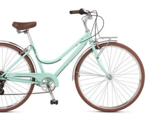

Велосипед SCHWINN Traveler women 2022
Данный велосипед с колесами 26 дюймов хорошо подходит высоким подросткам. Прогиб рамы и небольшой размер рамы расчитан на рост от 135 до 165 см.
Суммарный вес велосипеда был снижен до 16,9 кг, так как рама была изготовлена с учетом использования велосипеда подростками.
Характеристики
- Двойной обод
- Алюминиевый сплав
- Колеса диаметром 26 дюймов
- Покрышки 26х1,95"
Добавить характеристику

Велосипед SCHWINN Traveler women 2022
Женский велосипед со стальной рамой Classic step-true lightweight позволяет девушкам без проблем его перемещать.
На данном велосипеде имеется 7 скоростей с переключателями от Shimano, а жесткая вилка обеспечивает отличную управляемость. Подходит для катания по асфальтированным поверхностям.
Характеристики
- Стальная рама
- Жесткая вилка
- Колеса диаметром 24 дюймов
- 7 скоростей